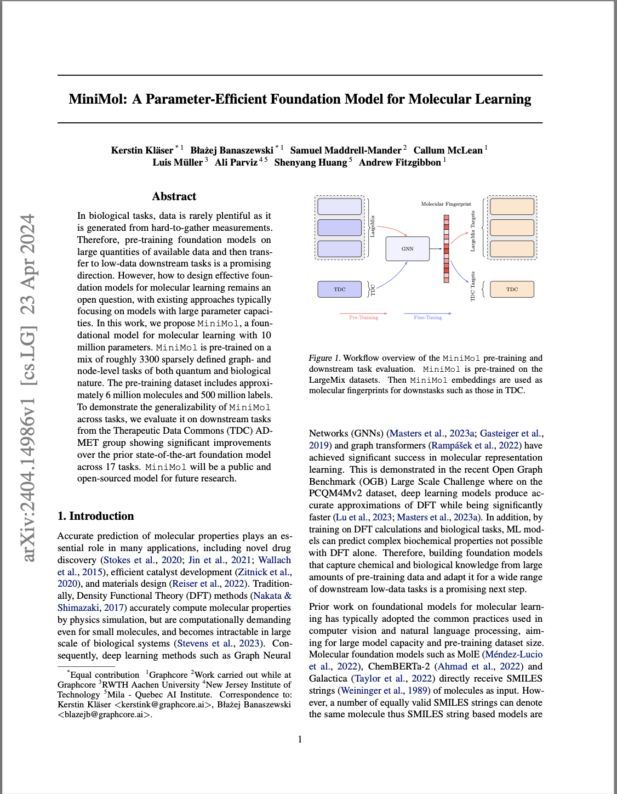

This paper introduces MiniMol, a parameter-efficient foundation model for molecular learning. We demonstrate that by leveraging advanced pre-training techniques and a novel architecture, MiniMol achieves comparable performance to larger models while using significantly fewer parameters.
Read the full paper on arXivKey Contributions
- Novel architecture combining aspects of transformers and graph neural networks
- Efficient pre-training strategy for molecular representations
- Comprehensive evaluation on multiple molecular property prediction tasks
- Analysis of model interpretability and its implications for drug discovery